在近期的组网系列分析中，海豚君已梳理了了英伟达&AMD为代表的2D胖树交换式组网，以及谷歌为代表的3D torus直连式组网。
英伟达是行业基准。硬件、协议、软件全栈自研，软硬协同带来了最佳性能；方案迭代节奏快、跨度大，产业链逻辑也随之快速切换。
AMD 效仿英伟达，但隔代竞争。Helios照搬GB300 NVL72的组网架构，但带宽性能上对标的却是Vera Rubin；交换芯片等关键硬件又依赖外采，Scale-Up 带宽虽已追平，整体性能与成本仍落后于英伟达。
谷歌另起炉灶。谷歌凭借出色的软件能力，以3D torus拓扑，通过OCS串联起了近万颗的Scale-Up域，在大规模组网需求下带来性价比。
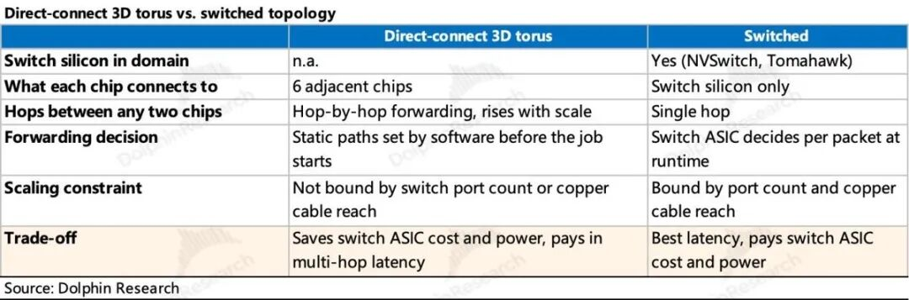
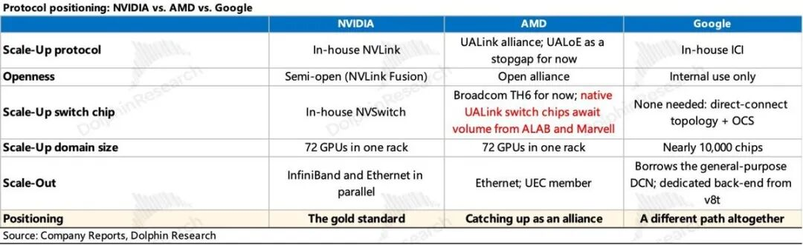
那么，尚不具备强竞争力、但在努力补足系统级交付（尤其是组网能力）的厂商，又是怎么做的？
本篇转向最后一家拥有系统级方案的CSP巨头AWS。其组网的核心特点是：先上市、再补课，能买不做、择廉而用。换言之，AWS 是全网最不自研的一家。
接下来，基于以上特点海豚君继续往下挖：
一、标准的组网协议，能行吗？
二、组网拓扑转变：从3D torus直连到交换式方案
三、AWS链的机会在哪里？
以下是详细分析
一、标准的组网协议，能行吗？
1、Scale-Up协议：「借壳」PCIe 的 NeuronLink
1）说是自研，但底子是PCIe
AWS为其自研算力芯片Trainium（下称Trn，对标英伟达的GPU）配套自研了片间互连协议NeuronLink（NL, 对标NVLink）但这一协议本质上是套壳PCIe的。NLv4单卡聚合双向带宽 2,304 GB/s（官方披露为2TB/s, vs NVLink 6 & UALoE 3.6TB/s），演进如下：
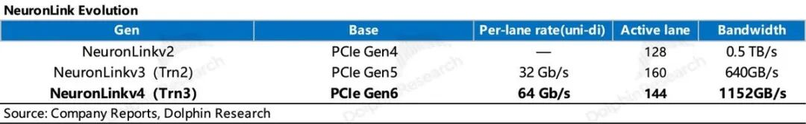
同样是基于标准通信协议，很容易联想到AMD由于其原生UALink交换芯片仍在研发，而不得不采用UALoE（UALink over Ethernet，基于以太网）协议作为过渡方案。
但是AWS并没有打算自研交换芯片，也就不太可能脱离PCIe了，因为自研的协议通常是需要芯片作支撑的。后续其反而可能成为UALink的采购方，将在后文组网方案中展开。
2）自研协议，究竟自研了什么？
业内似乎默认了Scale-Up协议必须得自研才能做到高带宽、低延迟。要判断AWS基于PCIe的组网协议好不好，需要先理解各厂商的Scale-Up协议究竟自研了什么。简言之，一套 Scale-Up 协议要解决三个问题：
a. 线路能跑多快：芯片之间靠一条条通道传数据（lane，即一对收、发线路，可以理解为一条车道）。每条通道能跑多快，取决于芯片上负责收发信号的电路（SerDes）做得好不好，这是门槛最高的。
b. 传错了怎么办：线路上难免出错，协议要规定怎么发现错误、怎么补救。
c. 芯片之间能做什么：即能否像访问自己的内存一样，直接按地址读写对方的数据，Scale-Up & Scale-Out的区别就是这一层定义的。
以上三点中，最为重要的是a。因为b、c两点类似于定义规则，而电路做得好不好是物理实现的问题，直接体现在单通道速率上，英伟达自研200G SerDes、AMD采购博通TH6也实现200G速率。单通道越快，同样带宽所需的通道就越少。
回到AWS，PCIe Gen6的单通道速率仅64G，那么要弥补带宽差距，要么等待PCIe迭代提速率，要么堆通道数。
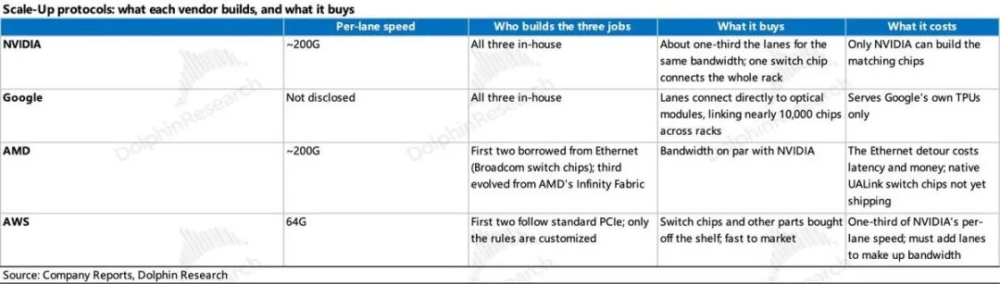
3）基于PCIe的通信协议好不好？答案是不
即便抛开AWS方案不谈，PCIe本为CPU和其它设备（xPU、网卡等）通信设计，相较于私有协议，除了单通道速率慢，还有端口数受限等问题，详见下表：
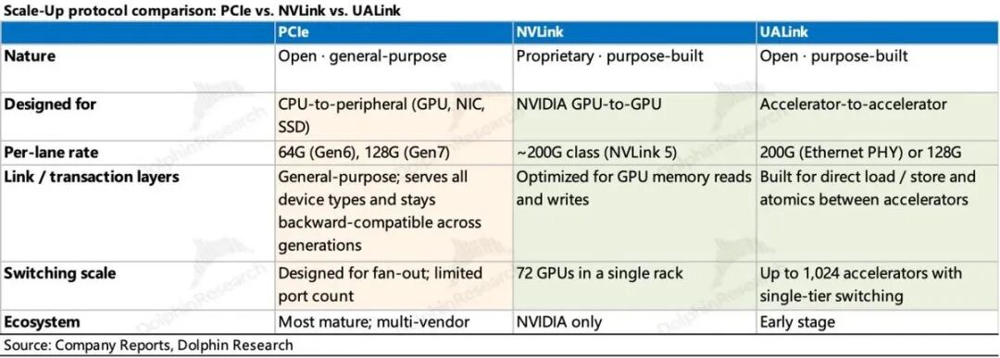
a. 等待迭代提速率？
节奏落后。PCIe约三年一代，NVLink约两年一代，迭代节奏是跟不上的，且PCIe从规范发布到芯片部署还要数年，AWS只能被动跟随。
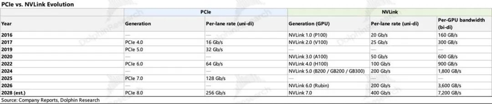
b. 堆通道数可行吗？
成本拉高。两代之间想多要带宽，只能堆通道数，但数量一多，背板铜缆及连接器和PCIe Retimer（用于解决信号在链路上衰减问题）水涨船高，拉高了功耗与整体成本。
c. 两头堵，为何还要选择PCIe？
答案很简单，图省事儿求快速上市。AWS 的协议层只需要跟着标准走即可，同时也省去了交换芯片的研发周期。而对于云厂商而言，既需要摆脱英伟达的溢价而开启自研，又需要尽快满足锚定客户（Anthropic）的算力节点的交付需求，因此选择了套壳PCIe。换句话说，竞争力不是其首要考虑要素，可交付才是。
4）NLv5，UALink/NVLink或许是个好归宿
而对于下一代协议，如果仍然基于 PCIe Gen7，协议层的处境可能更加尴尬。
我们可以从PCIe的演进逻辑来理解。如下表所示，从PCIe 5.0 至 PCIe 6.0单通道速率翻倍，靠的是改变调制方式。
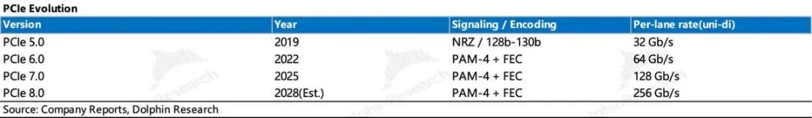
速率翻倍的物理实现有两种方式：一是让信号（由高低电压切换产生）切换频率翻番，但铜线的损耗随频率陡增，对走线要求很高；二是每切换一次多带一位信息。
NRZ调制方式是把电压分成高、低两档，每切换一次传1bit（即0，1）；PAM4调制方式在同样的电压内分四档，每切换一次传2bit（即00，01，10，11）。
Gen 7的问题是已无法再靠切换调制方式翻倍，只能提升信号频率，但对板材与Retimer的压力成倍上升，成本又要打不住了。
因此，海豚君认为AWS有两条出路：一是交换芯片换成UALink时，协议层顺势加入芯片配套的UALink，带来更高的带宽；二是转向 NVLink——AWS 已宣布 Trn4 将支持 NVLink Fusion。
2、Scale-Out协议：「躺平」的 EFA
看完 Scale-Up，AWS 的组网策略已大致清楚：在各家拼得头破血流的Scale-Up上它都很“佛系”，Scale-Out 更是“躺平”，因此简单带过。
a. 带宽两代不动。承载Scale-Out层的是AWS自研的EFA网络，其实是标准以太网的变体。两代主力机架方案的单卡Scale-Out带宽都是200Gb/s没有提升。作为对比，同期英伟达从GB300的800G升到Vera Rubin的1.6T，谷歌从v7的100G升到v8t的400G。
b. Scale-Up域小，带宽反而低。谷歌近万卡的 Scale-Up 域压低了对 Scale-Out 的需求，却仍把带宽提了4倍；英伟达的域只有72卡，大量流量要走Scale-Out，因此网卡带宽要求更高。AWS的Scale-Up域是144卡，处在中间，但Scale-Out带宽仅200G反比谷歌更低。
c. 关键交换硬件交换ASIC是外购的。尽管AWS自研网卡Nitro以及白盒交换机，但其中的交换芯片为多厂商采购（博通、Marvell）。
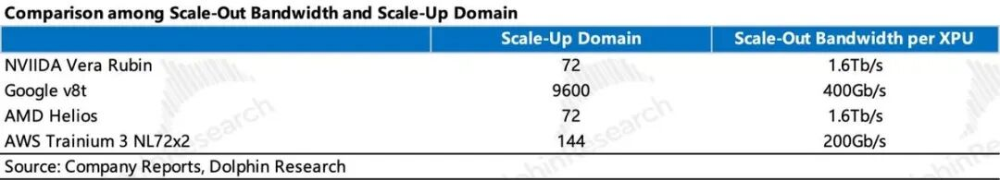
二、组网拓扑转变：从谷歌派，走到英伟达派
从Trn3开始，AWS组网路线切换。Trn2 没有交换芯片，靠3D torus用铜缆点对点直连（谷歌方案是光纤+OCS），Scale-Up 域 64 卡；Trn3 引入交换芯片，域扩至144卡，任意两卡之间的跳数（数据每经过一次转发即为一跳）也不再随规模增长。换言之，AWS从谷歌的直连路线，转向了英伟达NVL72的交换式路线。
一个自然的疑问是：谷歌能用直连做到近万卡，AWS 为什么不沿着这条路走下去？答案是，AWS 的 3D torus 是「拼」出来的，缺了谷歌让它做大的条件。
1、Trn2：「拼」出来的 3D Torus
旧款Trn2已非AWS的主推型号，我们简要介绍。以机架级方案Trn2-Ultra（同代另有16卡的普通Trn2 SKU）为例，物理规格由内而外参见下图。
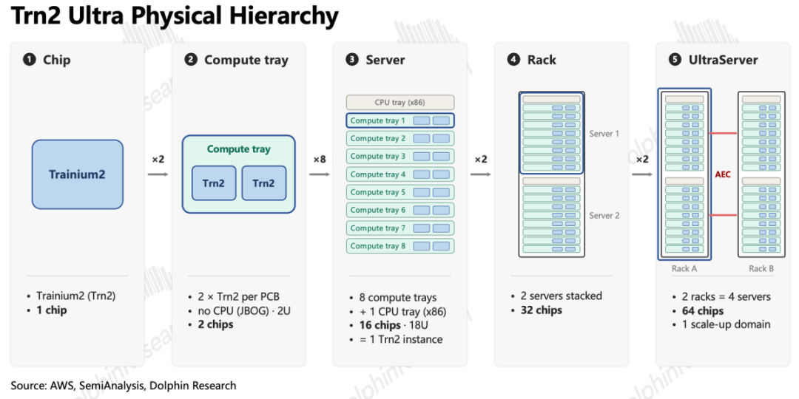
1）2D torus如何连接？
a. Intra-Tray：每个计算托盘装2颗Trn2，两卡经PCB走线直连（图中橙色虚线）；
b. Intra-Server：8个计算托盘与1个CPU托盘组成一台16卡服务器，计算托盘之间走机箱后缘的背板铜缆，计算托盘与CPU托盘通过前面板经DAC（无源铜缆）连接。
拓扑：16卡按 4×4相连，每行由 2 个托盘组成、每列跨4个托盘，每一行、每一列都首尾相接成环（正是torus的含义）。
以右图中红框芯片为例，它有 4 个直连邻居：① 同托盘邻居，走 PCB；② 下方托盘的邻居，走背板；③ 本行另一端的邻居，首尾绕回，走背板；④ 本列另一端的邻居，首尾绕回，走背板。
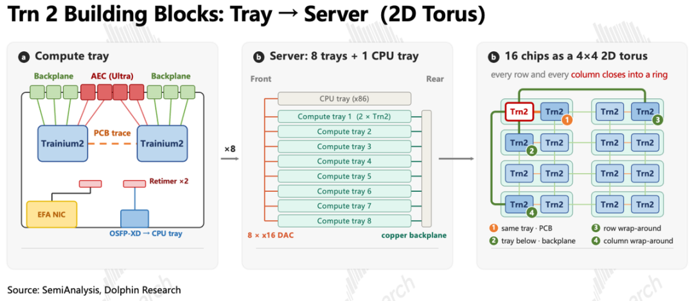
2）3D torus如何连接？
服务器内已经是平面组网，计算托盘内还有4颗OSFP接口笼（上图a中红色方块，通常用于接光模块或者铜缆），经AEC（有源铜缆，见后文），每台服务器与另外两台相连，首尾环绕成环，构成3D torus。至此每颗芯片有6个直连邻居。拓扑如下：
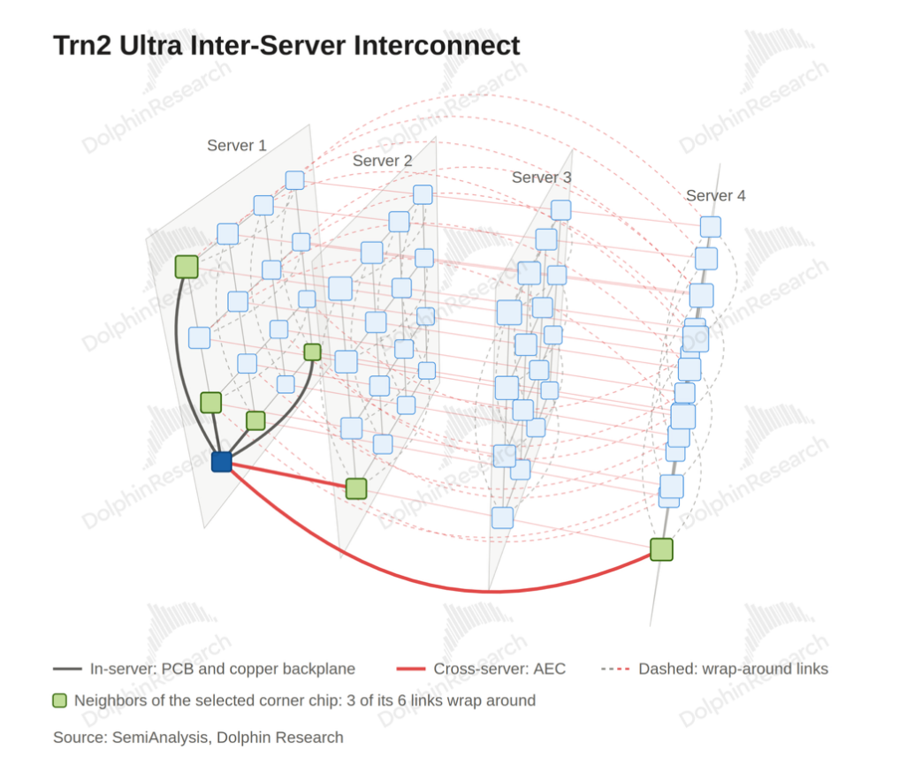
3）和谷歌的3D torus差距在哪儿？
这套4×4×4的3D torus与谷歌 TPU的Cube（谷歌的标准机架形态拓扑，见下图）形似，核心是回绕链路的走线介质不同：AWS方案中，相邻托盘及托盘内的走线与谷歌同样走铜；但回绕链路中，谷歌是通过光纤经光模块接入OCS，而AWS是通过铜（背板铜缆&AEC）连接的。
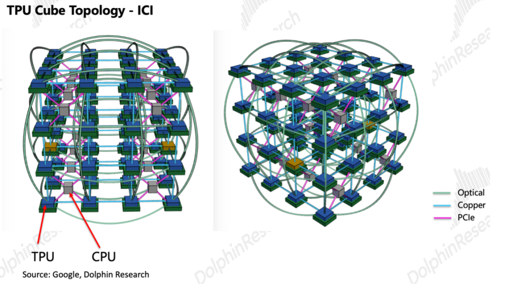
直接后果是域上限仅64卡。谷歌Cube的回绕链路接入OCS后可以通过软件将Cube灵活拼接，做到近万卡。Trn2 无交换元件，背板铜缆是固定的，且AEC铜缆拉线有长度上限，无法连更多机柜。
总的来说，Trn2全部用铜，且无交换的方式做连接导致它的芯片组网大幅受限。上篇说过，谷歌的3D torus 建立在OCS等基础设施与谷歌软件栈之上，拓扑和路径要在任务开始前由软件配置完成，AWS需要补课的地方太多，又着急投用，因此转向了交换式。
2、Trn3：「买」出来的交换式
1）与GB300类似的机架形态
以主力机型Trn3 NL72x2为例，该方案基本照搬了英伟达NVL72的交换式架构，包括72卡一柜，柜内托盘“三明治式“的摆放等（计算托盘-交换托盘-计算托盘）。
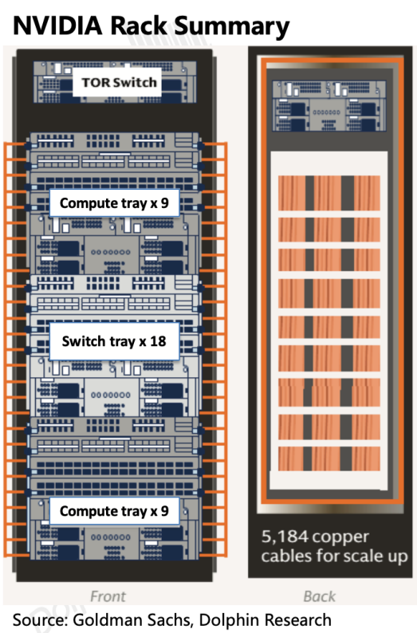
而之所以被称为Trn3 NL72x2，是因为两个72卡的机架作为一个可交付的SKU（即144卡的Scale-Up域），机架之间是通过有源铜缆（AEC）连接的。
跨柜使用AEC的原因是，因为无源铜缆物理距离受限，而光模块又贵又易坏，相邻机柜之间的短距连接，AEC确实是合适的选择。两柜之间，机柜内相对位置相同的芯片通过AEC两两直连，如下所示：
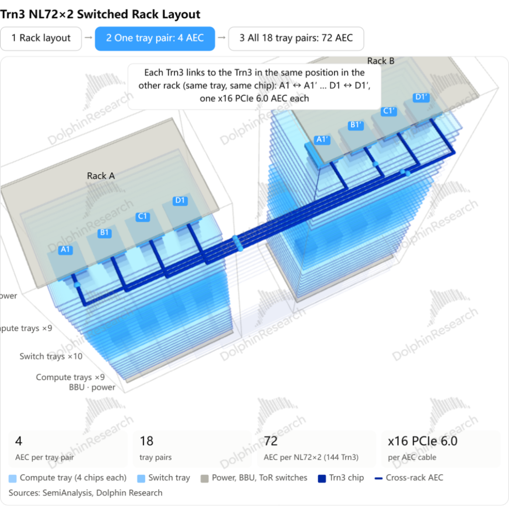
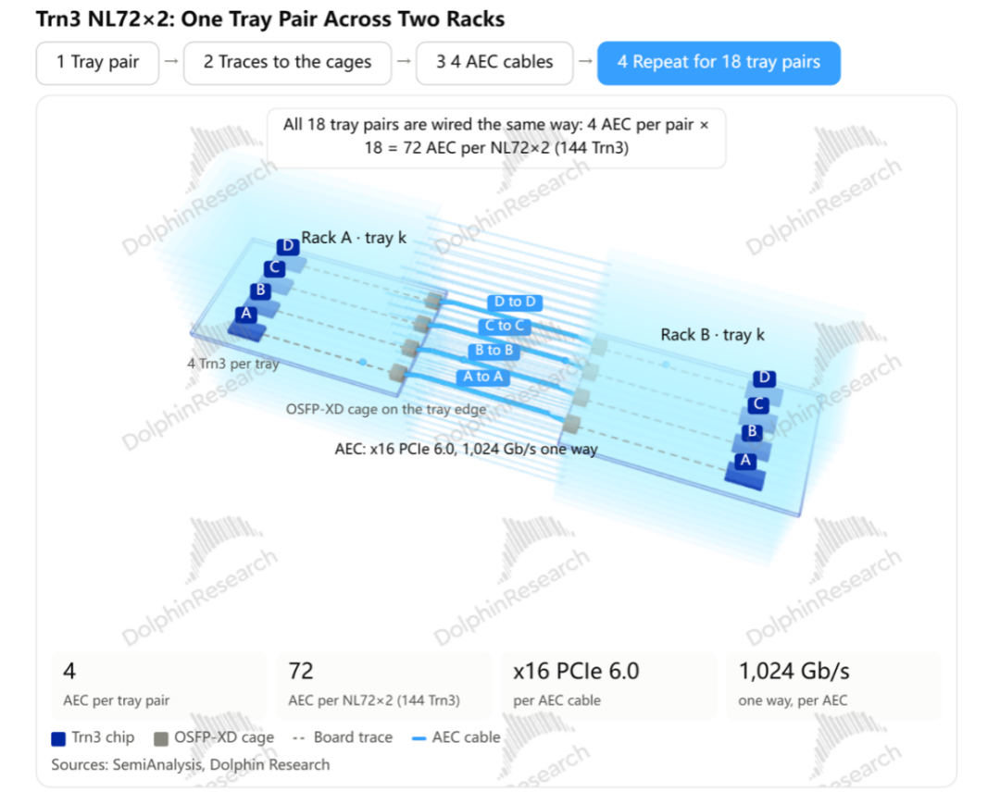
自然的疑问是，为什么是144卡？核心点在于弥补Trn3弱势的算力、带宽性能。如下表所示，Trn3单卡FP8算力约为GB300的一半，两柜144颗Trn3在FP8算力与HBM容量上正好对标一柜GB300 NVL72。
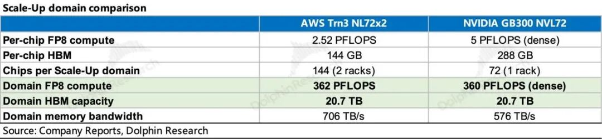
介绍完以上架构设计与整体性能上的类同，更关键的问题是，该如何理解Trn3的组网及其差异？
2）如何理解Trn3的组网及其差异？
我们一直强调Trn3是交换式的组网，也就意味着可以参考英伟达的组网来理解。要点是，GB300的Scale-Up（含托盘内/跨托盘）是72卡全互连的，通过机柜内交换托盘中的NV Switch芯片进行转发。域内通信仅1跳，延迟极低。具体可参见先前的深度。
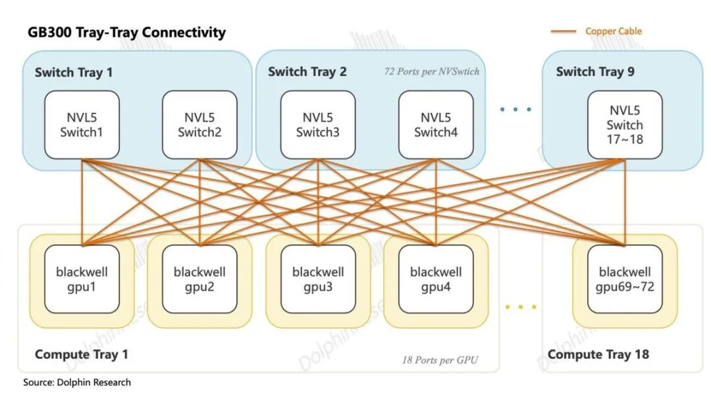
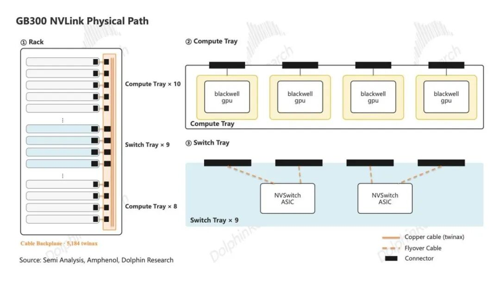
AWS Trn3 Scale-Up域内的互连同样需要交换芯片的转发，但目前仍不是全互连的，需要多跳，方案整体的延迟是落后的。那么，
3）非全互连的交换式组网是如何实现的呢？
计算托盘内部元件如下，需要关注的是红框内Scale-Up相关元件，此前深度中已有涉及。其中最为核心的差异是，Trn3计算托盘内有8颗Scorpio-P交换ASIC（见下图PCIe Switch），而GB300内没有，其交换芯片都外置在交换托盘内。
当然Trn3 NL72x2的机架内也有交换托盘，用的是Scorpio-X交换ASIC。需要两款交换芯片的原因，将在下文组网部分一同展开。(注: Scorpio-P和Scorpio-X均来自美股半导体公司Astera Labs。)
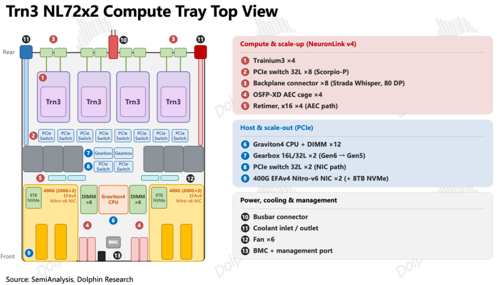
从数据流动的视角来看，GB300的全互连的Scale-Up路径可简化成：起始GPU → 背板铜缆 → NVSwitch ASIC → 背板铜缆 → 目标GPU。能做到全互连，关键在于一颗 NVSwitch 有72个端口，接满域内全部 72 颗GPU。
而Trn3的Scorpio-X（交换托盘）只有18个可用端口，只对应18个计算托盘，而一颗交换芯片在每个托盘只能接1颗Trn3。
但单托盘有4颗Trn3，就得搭4个独立的“垂直天梯”（如下图）。这样搭下来，同个天梯上的18颗计算芯实现一跳互联；但每托盘是四颗芯片，就组成了四条天梯。Scorpio-X端口数太少，天梯之间无直联通道。
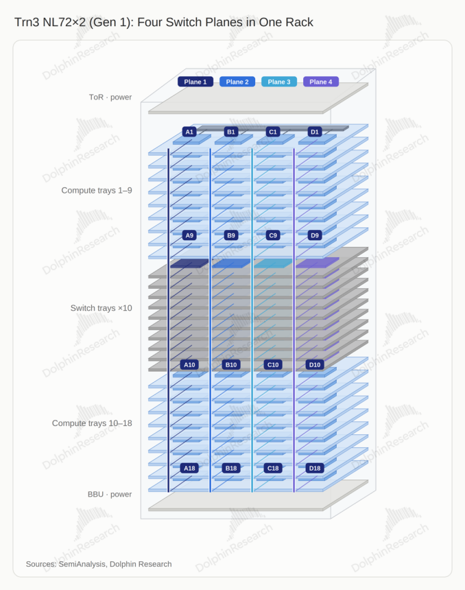
而天梯之间要互联，就要降到托盘内的8颗 Scorpio-P（见前图），而之所以用8颗，是托盘间一条天梯内，每个计算芯连10颗交换芯，每交换芯配给计算芯8条通道，合计每计算芯80条通道。
而托盘内每颗交换芯只有 32 条通道，分给盘内 4 颗芯片，每颗只能分到 8 条。用8颗这样的P交换芯就能配64条通道。等于配上8颗P交换芯的组网，能保持Tray内的一跳，和同天梯内跨Tray一跳保持基本相同的通道速率。
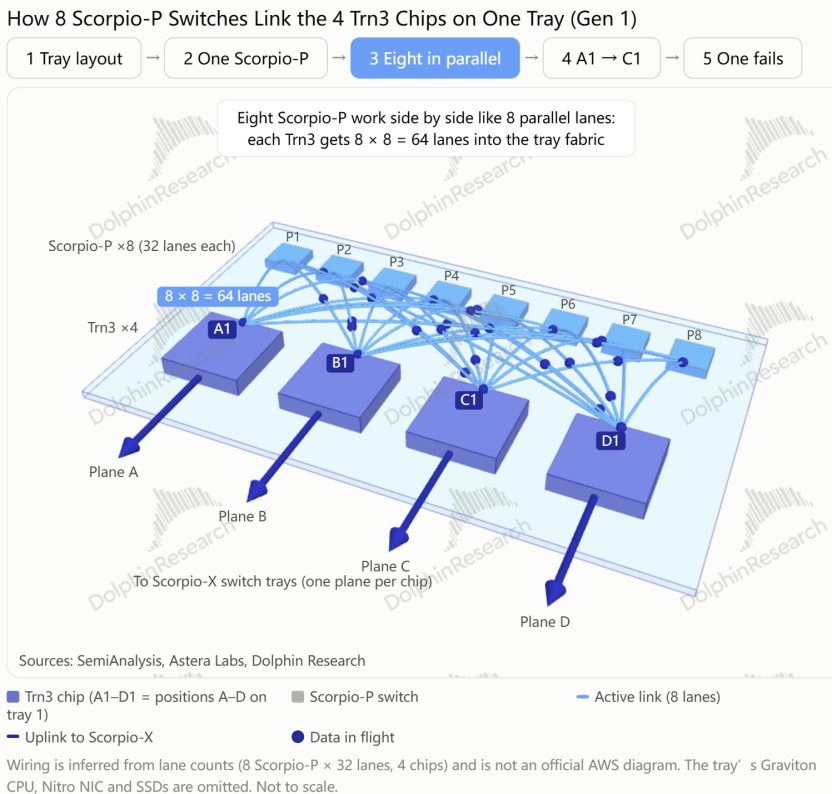
小结一下，Trn3 NL72x2域是通过AEC跨柜构成的，其柜内类似GB300交换式的通信由于交换托盘内的交换ASIC端口数少，组网是多平面的，因此在计算托盘与交换托盘内都存在交换芯片，尚未实现全互连。
4）跨柜：交换芯+跨柜的拖累
海豚君在谷歌的深度中已经指出了多跳带来的延迟影响，其在v8i（面向推理场景）的组网也优化了跳数。那么在Trn3 NL72x2域内，跳数（延迟）如何呢？
如图，以机柜A托盘1的芯片A1，跨越机柜B，到达C9：到托盘9的A9同在一个平面，经Scorpio-X直达，1跳；到C9要先经Scorpio-P借道另一颗芯片换到C所在平面，3跳；到机柜B的C9′还要再多一次跨柜中转，4跳。
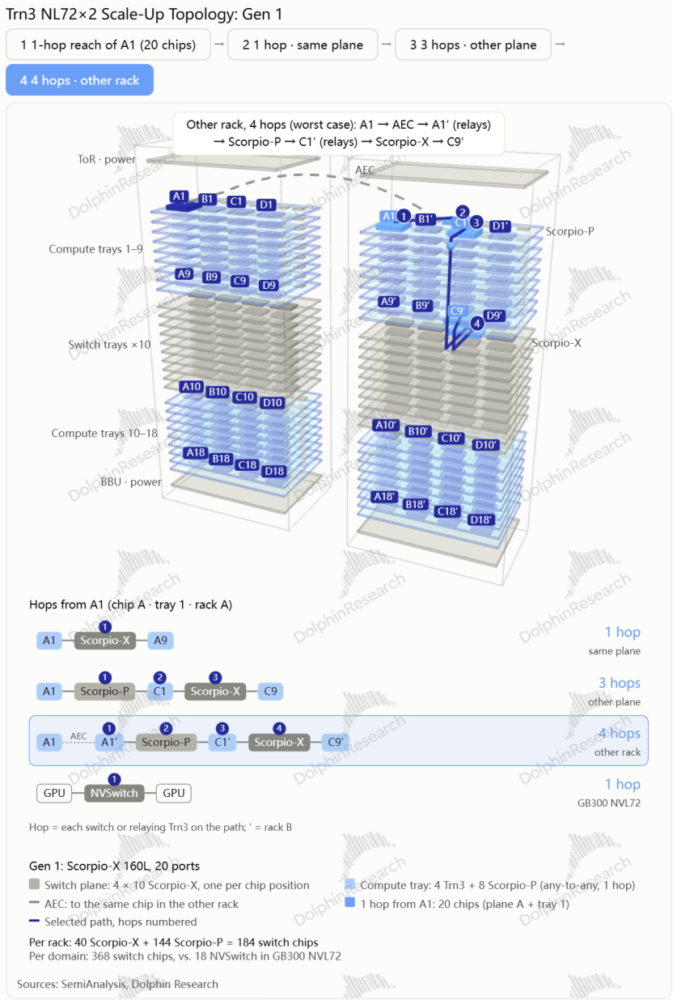
5）如何补课？等标品的端口数长上来
交换侧的多跳、多平面，都由于交换芯片的端口数过少。AWS的解法是Trn3生命周期内需迭代三代，但只替换交换托盘里的交换ASIC（Scorpio-X），直到采用第三代UALink才降到柜内1跳。
a. 一代，160通道Scorpio-X PCIe 6.0：每柜 4 平面，柜内最长路径 3 跳、跨柜 4 跳；
b. 二代，320通道Scorpio-X PCIe 6.0：端口翻倍，平面由4个减为2个，托盘内相邻芯片仍经 Scorpio-P互连；
c. 三代，72+端口 UALink 交换机：每颗交换机可接柜内每一颗 Trn3，柜内变全互连，实现1跳，但跨柜仍需两跳。跳数减少将拉低整体延迟。而计算托盘内的交换芯片不再是必经的中转，但仍然在成本侧。
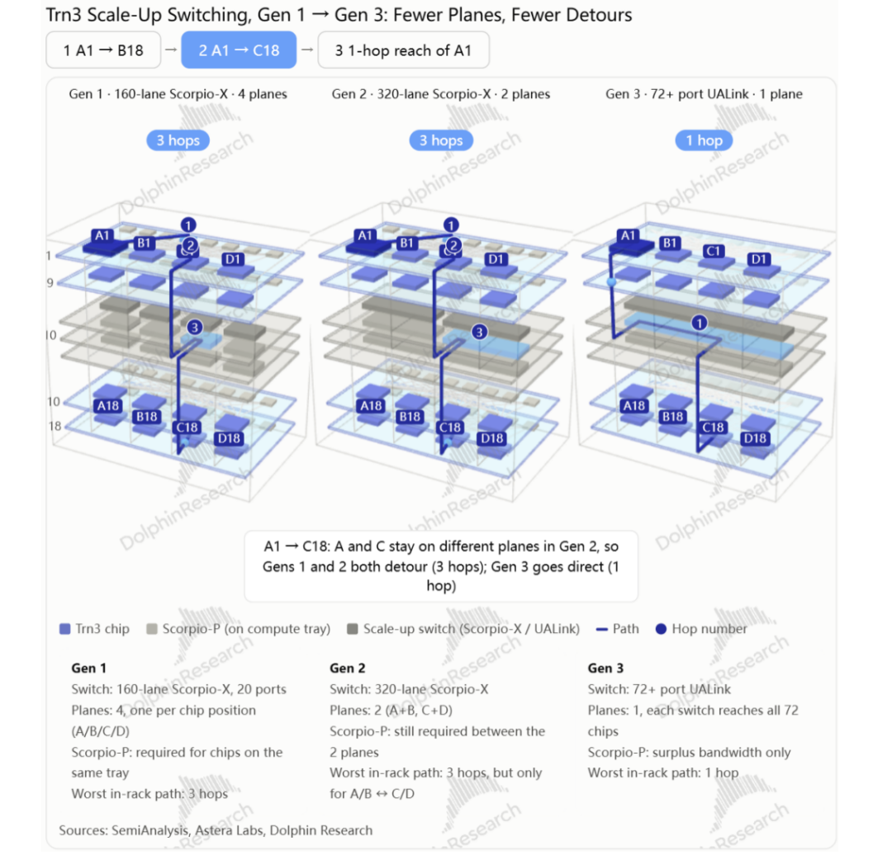
3、小结：跑得快，但跑得远吗？
可以看到，AWS的组网并不依靠自研求差异化和高性能，而是捡市面上立即可用的标准件，低成本组网，其实就是图省事的火速投用。
Scale-Up 层：
- 协议层面，基于PCIe的NeuronLink是图省事的做法，中长期看是会被取代的。
- 组网上，由于3D torus的大规模组网对厂商软件以及网络基础设施的要求较高，AWS被迫转向交换式连接。
但作为核心硬件的交换芯片采用的是标品，端口少，即便采取了交换式拓扑仍然需要多跳，跳数改善要等高端口数的交换机出货。
Scale-Out 层：每卡Scale-Out带宽仅200Gb/s，近两代无提升；交换芯片同样外采。
换言之，AWS 的组网缺乏自主权，其端口数、跳数、升级节奏都取决于供应商。因此，单论组网，AWS既没有英伟达的性能，也没有谷歌的规模，竞争力并不强。
中长期看，Trn3仍在等着UALink交换机的出货，那么Trn4的组网相较于其它厂商的组网方案差距可能会进一步拉大。
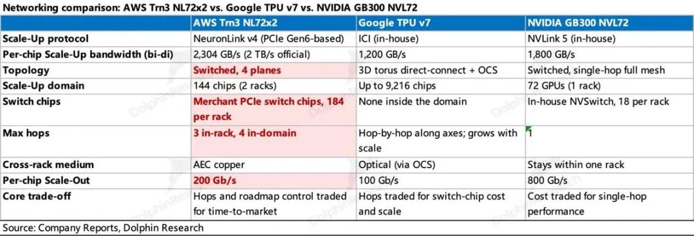
三、AWS链的机会在哪里？
如上所述，AWS不是奔着打赢英伟达、AMD、谷歌去的。接下来我们来探究下其产业链的机会在何处。
1、组网真的便宜吗？
AWS组网硬件多为采买标品，或许不必为定制化支付溢价。
NL72x2的单域（即双机架）组网成本测算如下：
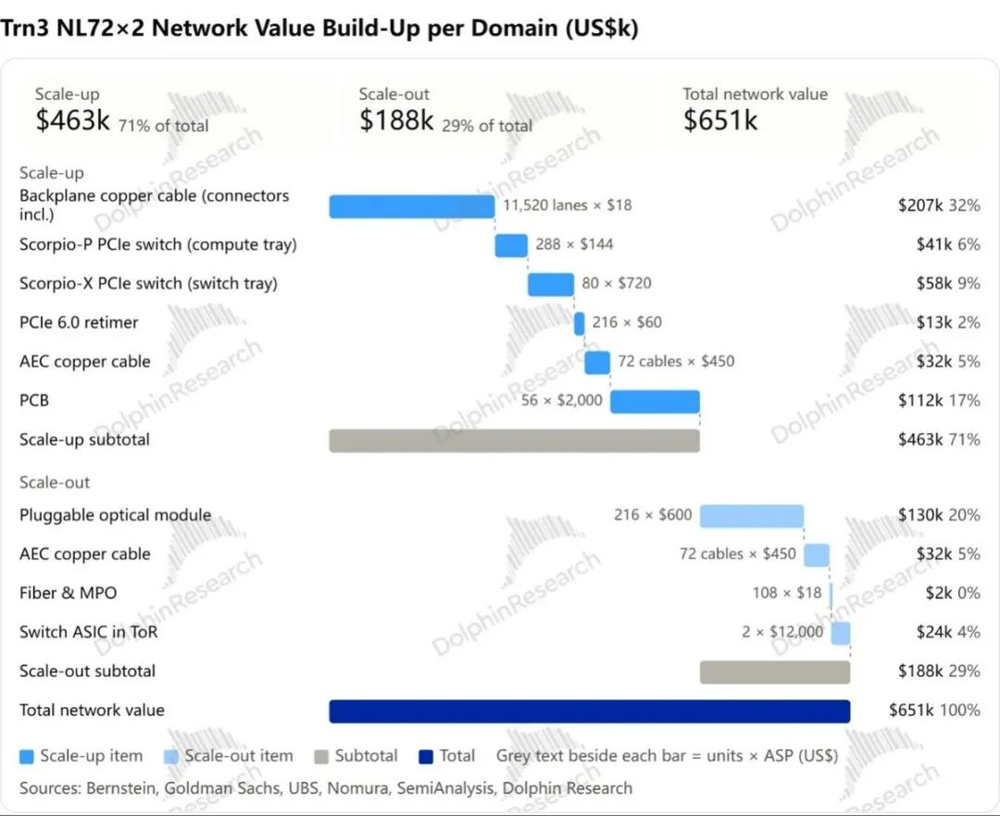
初看单卡组网成本，AWS的策略是成功的，机柜形态基本对标GB300，单卡组网成本却更低。省下的钱主要来自 Scale-Out侧光模块的节省：主要是省去了网卡与ToR层的光模块。Trn3的Scale-Out流量先经AEC铜缆接到柜顶部的两台ToR交换机，因此光模块只出现在ToR层及以上的链路。
若折算到同等算力，结论与上文一致，Trn3的组网性价比不高，竞争力并不强。
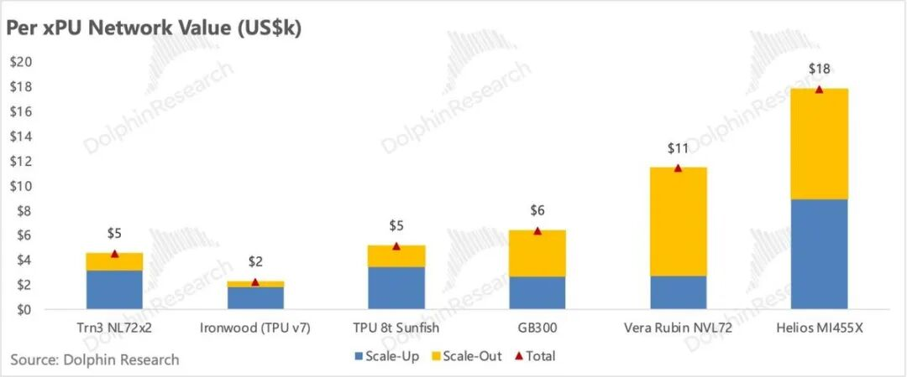
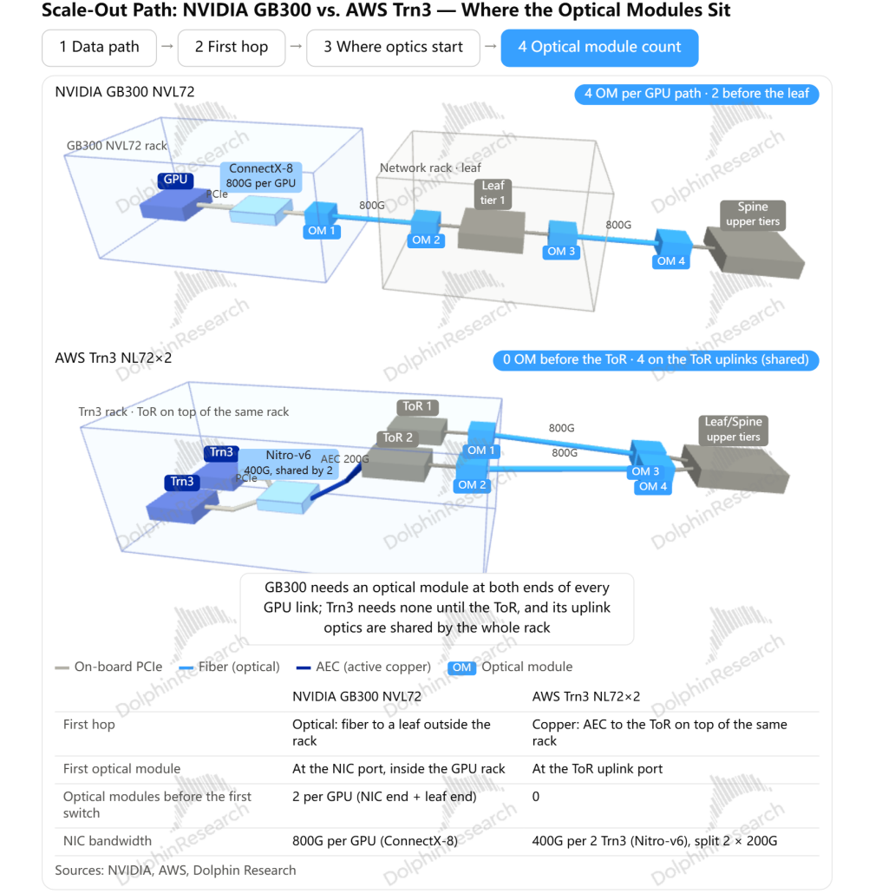
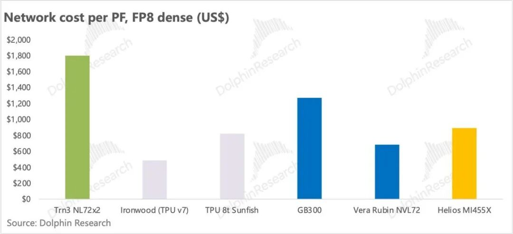
2、如何看待产业链机会？
AWS对标品的采买，除了压低组网成本，也意味着供应链高度多元，因此，链条上价值量以及确定性就极其关键。
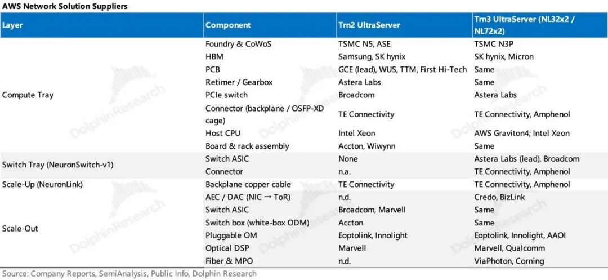
单机柜的价值量上，铜连接最大，其后依次为光连接、交换、PCB、PCIe Retimer。
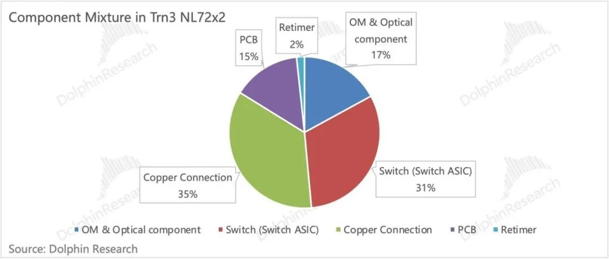
确定性上我们从方案迭代角度考虑：
我们认为确定性最强的是 PCB。因为无论 Trn4 走哪条路，板材都需要升级：
- 若继续走PCIe，代际迭代会同时抬高板材、Retimer与SerDes的要求，Gen7对板材压力更大。但其中只有板材是刚性的：Retimer并非必需品，SerDes 强的方案（如英伟达）可以不用，PCB板材增强后亦可能移除部分Retimer。
- 若转向 NVLink（Trn4）或 UALink，单通道速率达到 200G，信号需要M9乃至更高等级材料，确定性更强。
其次是光连接和铜连接。
- 大规模组网需求下，Scale-Out使光连接的确定性与价值量双双抬升。
- 铜连接仍将以柜内连接为主要场景，AWS在跨柜组网上是AEC的忠实采用方，但无法排除AWS趋向行业方案、跨柜走光的可能性。
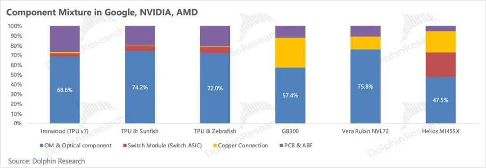
再次是交换。Trn3生命周期内以采购标品为主，核心供应商是 Astera Labs，但在下一代交换芯片（交换托盘内）上，可能会转向高通，详细点评请参见。
而在Trn4代际，若走 NVLink Fusion，交换芯片可能依赖NVSwitch；若走UALink，也可能让位于AMD（芯片在Marvell与ALAB共同研发中）。
最后是PCIe Retimer。价值量不高，且存在板材对它的替代，是当前必需、但可能被优化掉的环节。
关于光连接，交换以及PCB的产业链详细逻辑可回溯此前的深度。
3、铜连接没机会了吗？
高速铜缆可分为DAC、ACC和AEC。相比DAC，ACC通过在线缆的接收端加入Redriver来延长铜缆的传输距离；AEC在线缆两端引入Retimer对电信号进行重定时，补偿铜缆损耗的能力更强，传输距离进一步延长，正如表中所示，AEC的传输上限长达30m。
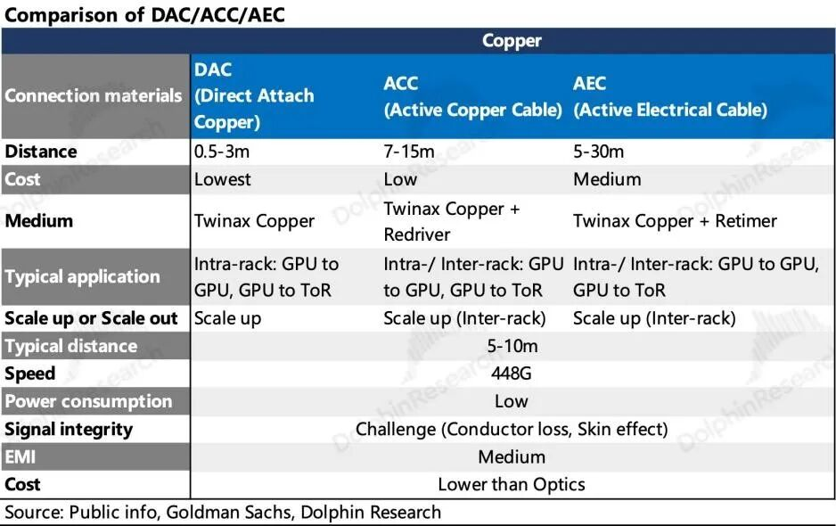
下图的信号眼图解释Redriver和Retimer的区别：「眼睛」张得越开、越干净，接收端越容易分清 0 和 1。信号经走线衰减后，眼睛几近闭合（左）；Redriver 放大衰减的信号，眼睛重新张开，但噪声也被一并放大（中）。
Retimer重定时的做法是：把信号收下、重新判断后再发一遍，输出一份全新的干净信号（右）。
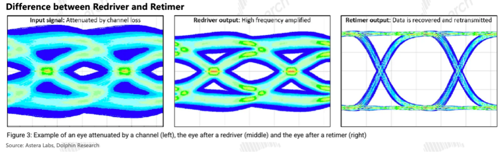
行业而言，Scale-Out 以光为主，机柜内部的Scale-Up仍以稳定、高效、便宜的DAC为主，铜的基本盘仍在。但这块基本盘也并不稳定：英伟达Kyber机架以PCB中板取代柜内铜缆，对铜缆是利空。
海豚君认为，铜连接的增量在AEC，来自两类场景：
一是Scale-Up域开始出柜，但只跨一两个相邻机柜，距离超出DAC的可达范围，又因功耗与可靠性不值得上光，AWS的跨柜方案即属此类；
二是单通道速率持续提升，DAC能走的距离越来越短，部分原本用DAC的链路被迫升级为AEC。
中长期看，跨柜距离再拉长，铜缆将鞭长莫及：Rubin Ultra NVL576横跨8个机架，已规划引入光连接。
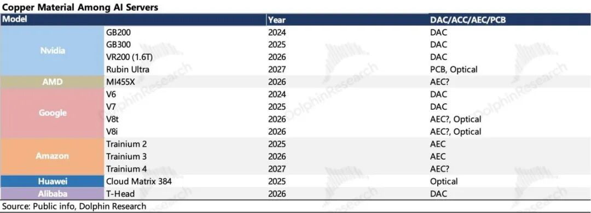
4、AEC产业链
AEC价值链的上游包括原材料（铜与塑料材料）、芯片/线缆/连接器制造。我们推荐关注高价值量的上游AEC Retimer芯片以及高速连接器环节。
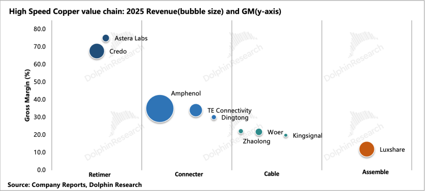
1）Retimer芯片：Credo一家独大
Retimer芯片是AEC价值量最大的部分，而这部分利润主要归芯片方所有。Credo占据超80%的市场份额，其作为AEC的开创者，是目前唯一能够同时提供芯片+成品线缆的垂直整合厂商，先发优势明显。Astera Labs的份额次之，而Marvell、博通仍在扩张中。
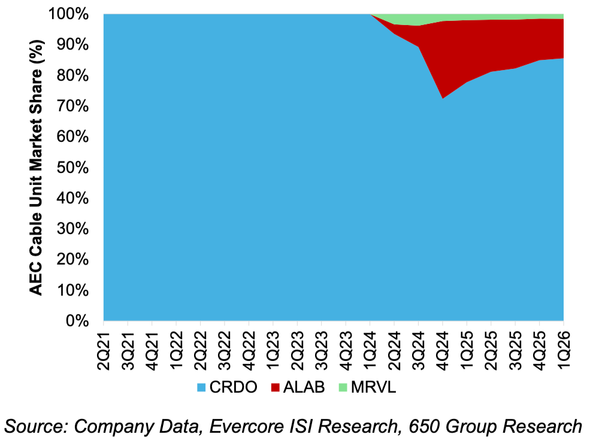
2）高速连接器：海外巨头守门，国产加速追赶
该环节对导电性与机械强度要求严苛，传统连接器巨头（如安费诺、TE）长期占据第一梯队，凭借技术积累与芯片厂商（如Credo）协作，形成从芯片到组装的完整方案。而面对光进铜退的市场趋势，行业龙头安费诺、TE正通过收购补充光连接的能力。
竞争格局上，连接器市场的CR10份额从2013年的60%下滑至2023年的50%，竞争更为充分且分散。国产厂商中立讯精密进展较快，2023年的市占率已升至第六；沃尔核材、兆龙互连正在上量。
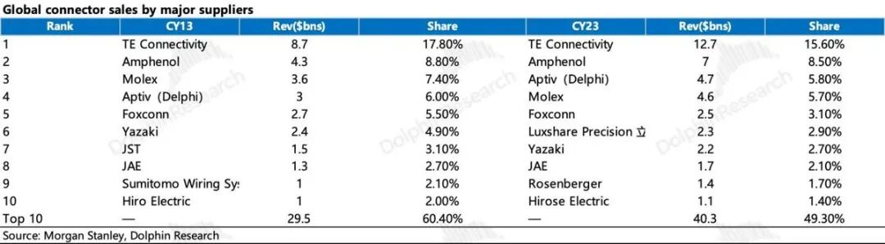
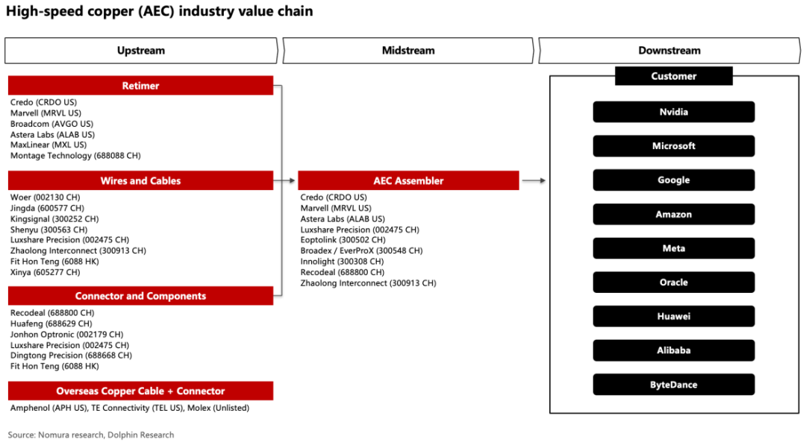
本文提及的核心标的如下（具体可点击此处：海豚君连接股单），光模块、CPO、PCB等其他连接硬件的核心标的请参见此前的深度。
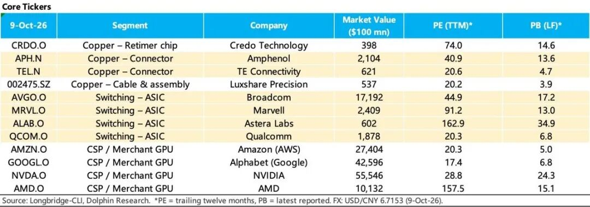
附录
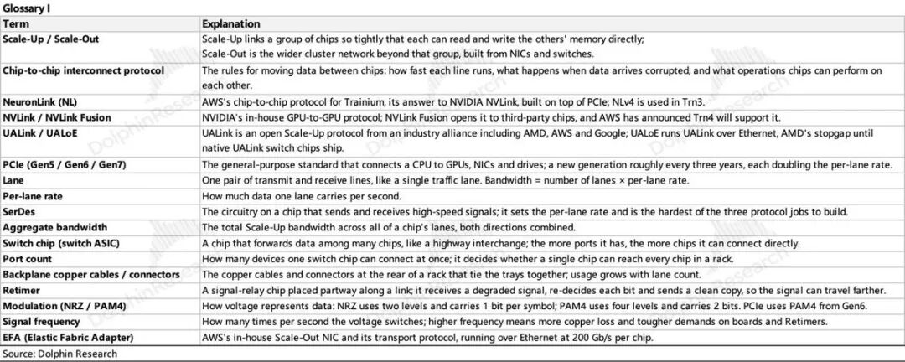
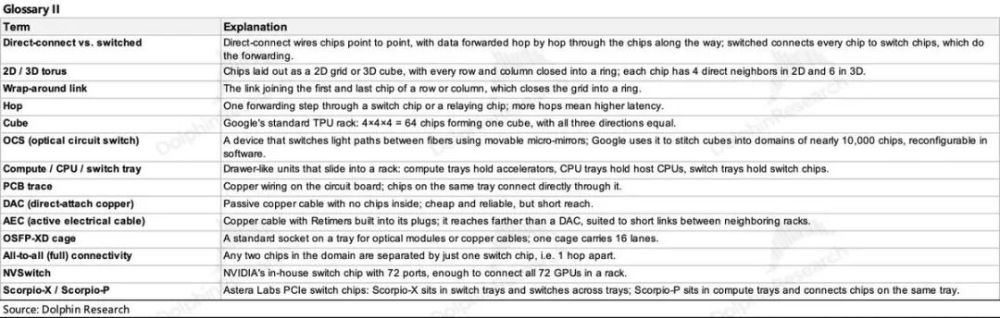
<此处结束>
- END -
// 转载开白
本文为海豚研究原创文章，如需转载请添加微信：dolphinR124 获得开白授权。
// 免责声明及一般披露提示
文章不易，点个“分享”，给我充点儿电吧~